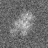

最小
最大
平均値
標準偏差
標準誤差
-65.0178
94.4699
4.85274
20.4635
0.255794
| オプション | 必須項目/選択項目 | 説明 | デフォルト |
|---|---|---|---|
| -i | 必須 | 入力ファイル設定 | NULL |
| -o | 必須 | 出力ファイル設定 | NULL |
| -m | 選択 | モード１ | 0 |
| -M | 選択 | モード２ | 0 |
| -h | 選択 | ヘルプを表示 |
| モード | 説明 |
|---|---|
| 0 | 90°左に回転（ｘｙ平面） |
| 1 | 90°右に回転（ｘｙ平面） |
| 2 | 90°左に回転（ｙｚ平面） |
| 3 | 90°右に回転（ｙｚ平面） |
| モード | 説明 |
|---|---|
| 0 | ２次元の画像 |
| 1 | 参照画像（モード１が0または1のときに使用可能） |
|
最小 |
-65.0178 |
|  | 最小 |
-65.0178 |
最小 |
-65.0178 |
最小 |
-65.0178 |
最小 |
-36.8299 |